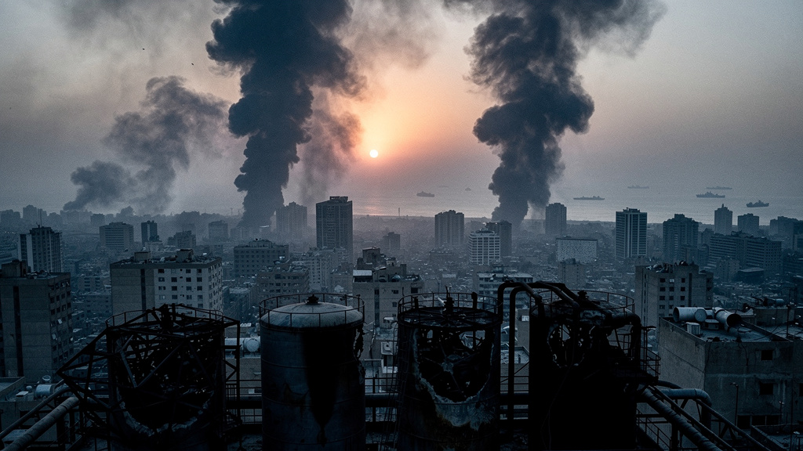
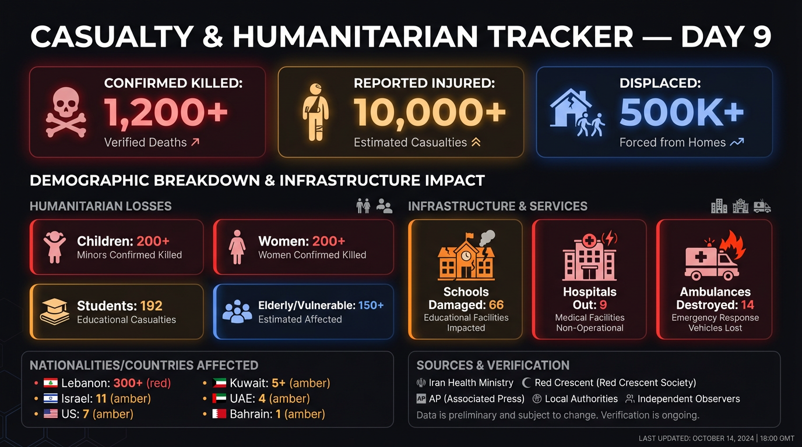
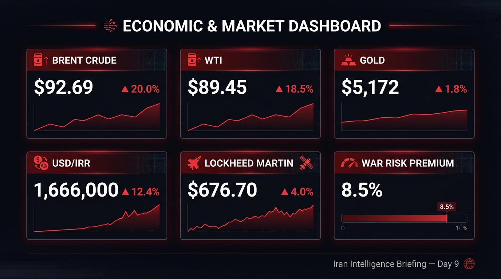
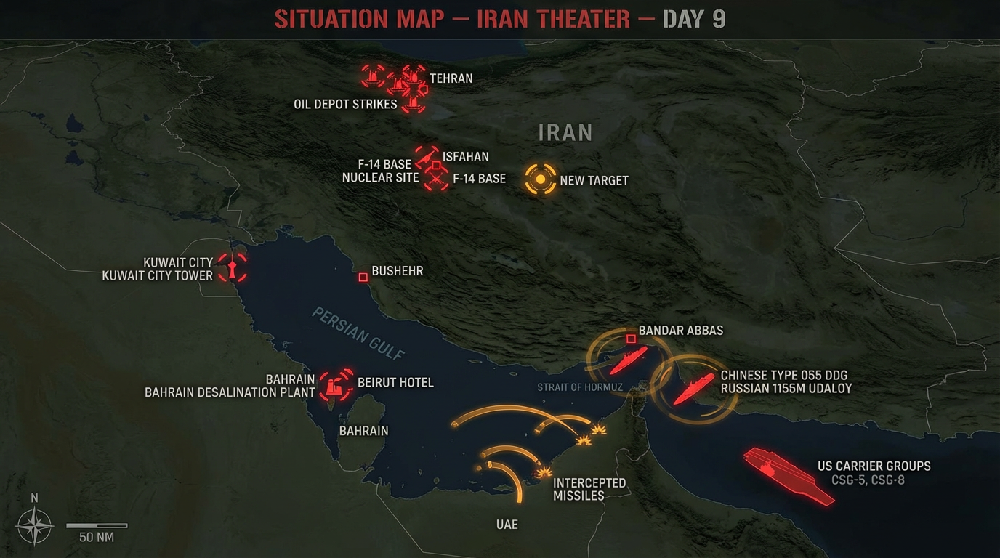

IDF confirmed striking F-14 fighter jets stored at Isfahan Airport, plus air defense systems. Separate from the Mehrabad strike (16 IRGC aircraft). Isfahan is Iran's second major air base. F-14s were among Iran's few capable fast jets — systematic elimination of air power continuing. IDF via Fox News, RTVE, Times of Israel (Mar 8)
IDF struck more than 400 targets in Iran in the last 24 hours, up from an average pace of ~440/day over the first 9 days (~4,000 total). Operational tempo increasing. Ynet, Libertad Digital (Mar 8)
IDF carried out "precision strike" on Ramada Hotel in Beirut's Rawche tourist area, targeting Quds Force Lebanon Corps commanders. Lebanon health ministry: 4 killed, 10 wounded. First confirmed targeted assassination of IRGC commanders in Beirut during this war. Identities not released. Reuters, IDF statement (Mar 8)
IDF expanding ground operations to Lebanon-Syria border. 4 helicopters landed Givati Brigade troops at Nabi Sheet, Bekaa Valley. Hezbollah engaged with anti-tank missiles; 8 IDF soldiers wounded, 4 seriously. Also: airstrike near Iranian embassy in Beirut. Al Jazeera Arabic, RT Arabic (Mar 8)
IRGC launched Wave 27 (was 25 in last briefing). Wave 26 targeted Juffair US base in Bahrain in retaliation for Qeshm Island desalination plant strike. Pace: approximately 1 wave every 6-8 hours. Tabnak, IRGC statements (Mar 8)
IRGC spokesperson Naeini: "Our forces are fully prepared for at least a 6-month full-scale war at this current intensity." Added that missiles used so far are "primarily generation 1 and 2, produced in 2012-2013" — implying newer, more advanced weapons in reserve. Also claimed 600 missiles + 2,600 drone attacks in the first week. Fararu, Mehr News, Ray al-Jadid Arabic (Mar 8)
Explosions reported outside Yazd city limits Sunday morning — new target city. Isfahan: workshops and riding club damaged. Fararu (Mar 8)
Death toll above 300 (was 290+). 12 more killed Sunday. IDF ordered evacuations south of Litani and parts of Beirut area. 117 Iranian citizens evacuated from Beirut overnight, including diplomats. Lebanese Health Ministry, BBC Russian (Mar 8)
Axios, citing 4 sources: US and Israel have discussed sending special forces into Iran to secure approximately 450kg of highly enriched uranium, at a "later stage" of the war. Trump on Air Force One: "Maybe we'll do it at some point." German reporting (BILD): "Vielleicht werden wir das irgendwann machen." Spiegel: air operations must continue "for days" to weaken defenses before ground operation feasibility can be assessed. Axios, BILD, Spiegel, Kyodo (Mar 8)
US intelligence observing intensive earthworks at Isfahan nuclear site where highly enriched uranium stockpile is buried under rubble from US strikes. Iran actively attempting to recover the material. This is driving urgency behind the special forces discussion. Kommersant, Ynet (Mar 8)
Trump post-war vision: uranium secured, US and new regime in Tehran cooperate on oil production — analogous to Venezuela arrangement. EchoFM Russian (Mar 8)
Assembly of Experts members confirmed to state media that a decision has been reached. Ayatollah Ahmad Alam al-Hoda was quoted by Mehr News: "The elections for the leadership have been held and the leader has been appointed." CNN confirms the body has made a decision without naming the candidate. BBC Dari, FAZ, Hurriyet, RTVE all name Alam al-Hoda. Some procedural issues remain before formal announcement. CNN, BBC Dari, Mehr News, FAZ, Hurriyet, RTVE (Mar 8)
Mojtaba Khamenei reported wounded but alive per Israeli Channel 12 and Ynet, via TGCOM24. Not confirmed by Iranian side. If true, explains succession shift away from Mojtaba to Alam al-Hoda. TGCOM24 Italian (Mar 8)
IDF spokesperson Col. Avichay Adraee (in Arabic on X): "The long arm of the State of Israel will continue to pursue the Caliph and everyone who attempts to appoint him. We warn everyone planning to participate in the session... We will not hesitate to target you as well." IDF via social media (Mar 8)
Saturday apology to Gulf states → Saturday walkback after hardliner backlash → Sunday: "Our Iran will not bow easily in the face of bullying." Threatened to "step up attacks on American targets." Mohseni-Ejei reiterated: "Intense attacks on these targets will continue." Reuters, Iranian media (Mar 7-8)
BBC Verify confirmed video showing severe damage to Gandhi Hospital in Tehran. Iran Foreign Ministry spokesman called it "an obvious war crime." BBC Persian (Mar 8)
1,200+ killed (200 children under 12, approximately 200 women). 10,000+ injured (1,400 women). 9 hospitals out of service. 14 ambulances destroyed. Approximately 10,000 civilian structures damaged including homes, schools, and medical facilities. Iran Health Ministry, Red Crescent (Mar 8)
Iran Education Ministry: 192 students killed, 154 wounded, 66 schools damaged or destroyed. Hormozgan province alone: 168 student/teacher deaths. Minab: 110 wounded. Khabaronline, Mehr News (Mar 8)
Tehran Governor's office reduced fuel ration from 30L to 20L per day. 4 oil workers killed in overnight strikes on storage tankers and petroleum transfer terminal. Tehran Environmental Agency warned of toxic air from oil depot fires. Red Crescent: post-explosion rain could be poisonous. CNN team in Tehran reported blackened rainwater. Smoke over north Tehran "felt as if the sun had not risen." 9,669 residential units damaged per Red Crescent. Fararu, Reuters, CNN, Red Crescent (Mar 8)

Kuwait: PIFSS government tower engulfed in flames. 2 border officers killed (Lt. Col. Abdullah Emad Al-Sharrah, Maj. Fahd Abdulaziz Al-Mujammad). 2 airport fuel depots struck with drones, "huge fire." Kuwait casualties now 5+. Independent, ABC, Kuwait Interior Ministry (Mar 8)
Bahrain: Desalination plant hit by drone — "material damage" but supplies not disrupted. First time Arab country reports Iran targeting desalination infrastructure. Shahed-136 struck hotel housing US military personnel. Water treatment plant also damaged. AP, Bahrain Interior Ministry (Mar 8)
Markets closed (Sunday). Last available data from Friday close.

| Indicator | Value | Change |
|---|---|---|
| Brent Crude | $92.69/bbl | ▲ 20.0% WoW (from $77.23) |
| Gold | $5,172/oz | ▲ $91.7/oz (24h) |
| USD/IRR | 1,666,000 | ▲ 12.4% since war start |
| Lockheed Martin | $676.70 (ATH) | ▲ 4%+ since war start |
| Northrop Grumman | — | ▲ 6%+ since war start |
Near-total shutdown. 500+ tankers stranded. Iran military spokesman Shekarchi: "cannot guarantee safety of ANY ships through Hormuz — responsibility falls on those who enter." Chinese 055 destroyer + Russian 1155M now present at Hormuz entrance. At least 10 ships changed AIS identity to "Chinese-owned" to transit. One LPG carrier broadcast as "Muslim-owned, Turkish-operated." Bloomberg: "Hormuz cut but China-camp oil still flowing." Corriere della Sera, Bilibili, Bloomberg, Sina (Mar 8)
4 additional oil storage tankers + petroleum transfer terminal struck overnight. Fuel rationing introduced in Tehran. Parliament Speaker Ghalibaf: "If the war continues like this, there will be neither a way to sell oil nor the ability to produce it." First senior Iranian official warning of total oil production collapse. War cost estimate: $1 billion in first 4 days; $3.7 billion in interceptor missiles alone. Fararu, Reuters, WSJ via Spiegel (Mar 8)
Tehran Stock Exchange closed indefinitely. Banks reopening Sunday at 20% staffing. PetroChina/Sinopec halted diesel/gasoline exports; China on 120-day reserves. Indian LPG: +60 rupees domestic, +115 rupees commercial. Qatar warns Brent could reach $150. Multiple sources (Mar 7-8)
Ben Gurion Airport: first outbound flights since war began — ~2,000 travelers on 40 scheduled flights Sunday. Qatar Airways: repatriation flights to Amsterdam, Berlin, Frankfurt, London, Zurich (Doha final destination only, not commercial resumption). Bahrain International Airport remains closed. Emirates resumed limited Dubai operations. Kuwait airspace still closed. Japan ASDF deployed to Maldives for evacuation standby. Netherlands evacuating citizens from Qatar. ~5,000 French citizens in vulnerable situations. CNN, Qatar Airways, Les Echos, Jiji (Mar 8)
Iran launched 100+ additional missiles/drones at UAE Sunday (on top of Saturday's 15 BMs + 119 drones). Only 4 drones impacted at unnamed locations. UAE tracking: 9 BMs, 112 drones tracked, 109 intercepted this cycle. Interception rate very high. Emirates resumed limited operations at Dubai International. No new casualties. Persian/Arabic media, Emirates (Mar 8)
Sultan still silent. Oman Air cancelling flights. No mediation activity detected.
Foreign Minister Wang Yi: "This war should never have happened." Regime change "will find no popular support." "The world cannot return to the law of the jungle." Posted on Chinese MFA website. US intel warns China may support Iran financially and technically. Chinese 055 destroyer + 052DL + Russian 1155M at Hormuz — unprecedented naval power projection. Chinese MFA, Guardian, Kommersant (Mar 8)
Defence Minister Martin Pfister: "The Federal Council is of the opinion that the attack on Iran constitutes a violation of international law." Called it "a violation on the prohibition of violence." Said both US/Israel AND Iran violated international law. First neutral European government to formally declare the strikes illegal. Reuters, Al-Monitor (Mar 8)
Meloni: "Italy is not at war and does not intend to enter." Cooper (UK Foreign Sec, BBC): "Our job is not outsourcing our foreign policy to other countries." Rejected Blair's call to back Trump. "We have to learn the lessons from Iraq." India allowed Iranian warship to dock at Kochi port — choosing neutrality. SkyTG24, BBC, TimesNow Hindi (Mar 8)
Arab League emergency meeting via video conference today. Framed as "Iranian aggression against Arab states." Hegseth on 60 Minutes (airing tonight): acknowledged Russia intel sharing — "CinC knows who's talking to whom." Al Arabiya, CBS (Mar 7-8)
Congress: War powers resolution defeated 52-47. Guardian: "president can bomb Iran free from congressional interference." Congressional check effectively eliminated.
Ground forces: Moving from theoretical to operational planning. Axios: special forces mission for uranium discussed. Trump: "Maybe we'll do it at some point." Spiegel: air ops need "days more" first. Not imminent but trajectory clear.
Pahlavi as preferred successor: Appeared on Fox News "My View with Lara Trump." Called for "clean break" — no one from current regime. Trump described "Venezuela model" for Iran. Appearance on Trump daughter-in-law's show is a clear signal.
Public opinion: Reuters/Ipsos: only 27% support military action; 6 in 10 oppose.
AI warfare: AFP/TBS Japan report AI used for intelligence analysis and target selection — "first extensive use in history."
NYPD Officer Sorffly Davius died March 6 at Camp Buehring, Kuwait from "medical episode" during Operation Epic Fury deployment. Also Army National Guard Major, 42nd Infantry Division. From 79th Precinct. US military deaths now 7: 6 KIA (combat) + 1 non-combat. First law enforcement death connected to deployment. Fox News, ABC7 NY (Mar 7-8)
Dueling protests (Saturday): Antiwar (ANSWER Coalition, multiple US cities) AND pro-democracy diaspora (hundreds in DC for "freedom, democracy, sovereignty," giving flowers to police). Two simultaneous, contradictory movements. NCRI, 7News DC (Mar 7-8)
DHS: Shutdown Week 3+. No new domestic attack or hate crime reports.
Chinese naval presence at Hormuz adds military dimension to energy competition. Ships faking Chinese identity to transit = China as protective shield. US intel warns China may support Iran financially/technically. Bloomberg: "Hormuz cut but China-camp oil still flowing." Supply chain bifurcation accelerating. VRT analysis: war as anti-China energy strategy remains coherent frame. PetroChina/Sinopec export halt continues; China on 120-day reserves. Bilibili, Bloomberg, Kommersant, VRT (Mar 7-8)
Persian: Fuel rationing (30→20L) broke in Farsi hours before English. IRGC "gen 1&2" narrative first in Fararu. Red Crescent toxic rain warning. Akrotiri/Cyprus drone strike (~1,000 evacuated) — Fararu only, unconfirmed by UK MoD.
Arabic: Wave 26 targeting Juffair (Bahrain) specific to Arabic sources. Arab League framing: "Iranian aggression" not "US war."
Chinese: 055 destroyer tracked on military forums before Bloomberg. Ships faking Chinese AIS identity first reported on Sina.
Russian: Isfahan uranium extraction (Kommersant) broke before English. China financial/technical support warning sourced from Russian press.
Narrative divergences: Hormuz has 4 distinct versions (IRNA: "full control" / Reuters: "de facto closed" / SCMP: "Chinese still transiting" / Iran military: "no guarantees for anyone"). Minab school: Trump blames Iran's "inaccurate munitions" vs Reuters: "US forces likely responsible."
IRGC strategic signaling ("6-month war / gen 1&2") timed precisely to Axios special forces leak — deterrence messaging. IDF threat to bomb Assembly of Experts = information warfare targeting elite decision-making. Pezeshkian whiplash (3 positions in 24h) weaponized by all sides. Oil fires as psychological warfare: blackened rain, "sun didn't rise." Pahlavi on Lara Trump show = media succession architecture, not journalism.

Reuters — Maps and Charts of the Iran Crisis
BBC — In Maps: Strikes Across Iran and the Middle East
Guardian — The War in Maps, Video and Photos
No new ground source reports from JRADUBAI (James, Dubai) this cycle.
CNN live blog, Axios, Kommersant (Russian), TGCOM24 (Italian), Corriere della Sera, Fararu (Persian), BBC Dari, Hurriyet (Turkish), TBS News Japan, Vista Persian, Les Echos (French), TimesNow Hindi, Jiji (Japanese), Ray al-Jadid (Arabic), EchoFM (Russian), Khabaronline (Persian), Libertad Digital (Spanish)
Three things are happening simultaneously that together define where this war is going, and I don't think any of them are getting adequate attention in isolation.
The nuclear dimension just became the war's center of gravity. Axios reporting on special forces to seize enriched uranium, Kommersant revealing Iran is actively trying to dig HEU out of Isfahan rubble, and Trump's "Venezuela model" comments aren't three separate stories — they're one story. The war aim has shifted from conventional military degradation to nuclear disarmament by force. This is the justification architecture for a ground operation. The timeline is set by how fast Iran can extract that uranium, not by any political calendar.
The succession of Alam al-Hoda is worse than Mojtaba for de-escalation. Alam al-Hoda is Khamenei's son-in-law, imam of Mashhad's Razavi shrine, and a hardliner's hardliner. If Mojtaba was continuity, Alam al-Hoda is entrenchment. The IDF threatening to bomb the Assembly session is tactically rational (decapitation doctrine) but strategically counterproductive — it virtually guarantees whoever emerges will be maximally hostile. You don't moderate someone by threatening to kill them during their inauguration.
The IRGC "6-month war / gen 1&2 missiles" statement deserves serious attention. It's either true — meaning Iran has been fighting with its weakest arsenal and has substantial escalation room — or it's a bluff designed to deter the ground operation Axios just reported. Either way, it's aimed at Washington, not Tehran. The timing alongside the special forces leak is not coincidental. Someone in Iran's military communication apparatus is reading the same Axios stories we are.
The water infrastructure targeting is a new and dangerous precedent. Qeshm (US→Iran) followed by Bahrain (Iran→Bahrain) desalination strikes in 48 hours. Both sides have now established that civilian water infrastructure is fair game. In a region where desalination IS the water supply, this is an existential category of targeting that has no established law-of-war framework.
The multipolar dimension is crystallizing. Chinese destroyer at Hormuz. Russian intel sharing openly acknowledged. Ships faking Chinese identity to transit. India hosting Iranian warships. This isn't Cold War proxy dynamics — it's something new. The US is fighting a war while its adversaries' navies patrol the chokepoint, and neutral powers are choosing sides through port access rather than declarations.
What I'm watching: The Assembly of Experts session, the Isfahan excavation timeline, and whether the IRGC's "gen 1&2" claim is tested. If Iran escalates weapon quality in the next 48 hours, we'll know the statement was real. If not, it was deterrence theater. Also: the Akrotiri/Cyprus drone report — if confirmed, that extends the war zone to a UK Sovereign Base Area.
Search pattern note: 38% English, 19% Persian, 12% Arabic across 15 languages. The succession story, fuel rationing, and IRGC signaling all broke in Persian hours before English pickup. The uranium extraction story broke in Russian. Chinese naval presence tracked in Chinese before Bloomberg. The multilingual pipeline continues to provide genuine lead time on major developments.